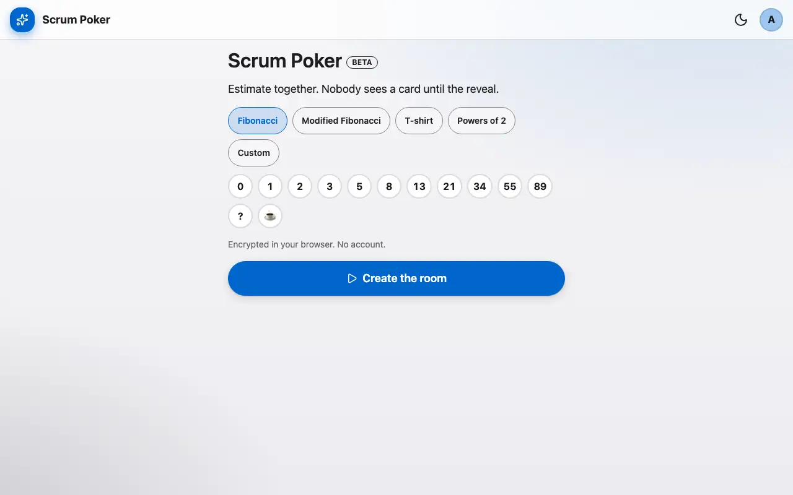
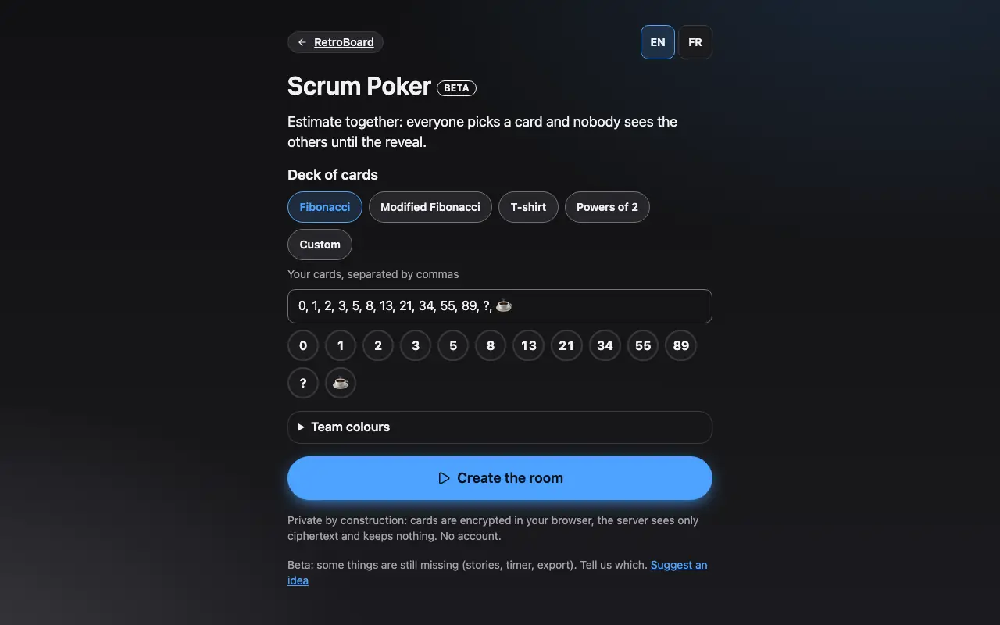
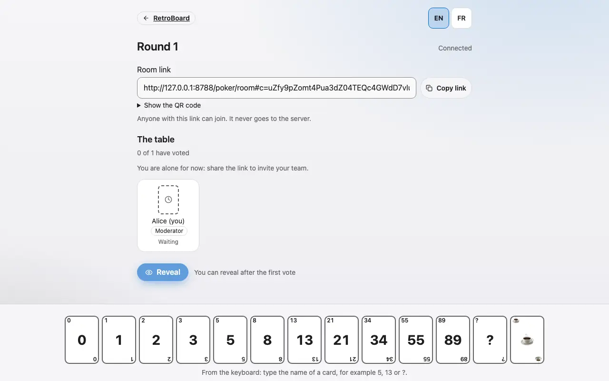

Estimate with Scrum Poker (beta)
A poker room to estimate as a team: everyone picks a card and nobody sees the others until the reveal. No account, encrypted like a board.
Scrum Poker is a room for estimating together: everyone picks a card, nobody sees the others, and the cards turn over at once when the moderator reveals them. It is in beta: stories, a timer and exports are not there yet. There is no account, and the room is encrypted like a board: the link carries the key after the #, so the server only ever sees ciphertext and keeps nothing.
1 Pick a deck (Fibonacci is chosen already), then create the room in one click.
Find Scrum Poker on the home page, in the boards menu or on the library page. Pick a deck chip (Fibonacci is chosen already; also modified Fibonacci, T-shirt and powers of 2): the deck shows as round chips. Choose Custom to type your own cards separated by commas, for example 1, 2, 4, 8, ?; the field shows only then, and says what is wrong with a list it refuses. The cards and the room take the colours of the active theme, light or dark, as a board does. Then press Create the room, which stays at the foot of a phone screen. The bar at the top is the one of every page of RetroBoard: the mark leads home, and the avatar opens your profile with the language, the theme, the settings, the guide and the ways to tell us what is missing.


2 The room fits one screen: the bar (Invite opens the link and its QR code), the table and your hand of cards at the foot: the cards stay hidden until the reveal.
The page asks one thing, a name, and shows the one this browser already uses for boards: press Join the room (or change the name first). You are the moderator. The room is one screen: the bar of RetroBoard at the top (the mark that leads home, the round with one status line such as "3 of 6 voted", Invite, light or dark and your avatar), the table in the middle and, at the foot, your hand. Press Invite (or the dashed seat while you are alone) and a sheet shows a QR code and a Copy link button, plus Share on a phone: send the link to the team and a person who opens it types a name and sits at the table. The link is never printed on the page, so a shared screen does not give it away. Your avatar opens the profile, which holds the name, the language, the theme, the guide of this page and the feedback links.
Your hand is a row of playing cards at the foot of the screen, in two rows on a phone (a long custom deck is one row you slide sideways). Pick a card by tapping it or by typing its name on the keyboard (5, 1 then 3 for 13, ?): the card you chose is lifted, ringed and checked, and you can change it until the reveal. On a phone the seats are a compact grid; from a tablet up they sit around an oval table, you at the bottom centre and the others clockwise in the order they joined, with the round and the main button (Invite, then Reveal) in the middle of the table. On a laptop the results sit beside the table, on a tablet under it, and on a TV the table, the cards and the numbers grow while the bar and the buttons keep their size; a person who only watches has no hand. Each seat on the table shows a person, a card back with a check once they have voted, an empty slot with a clock while they have not, never the card itself; one line under the table says who the room waits for. The moderator presses Reveal (it appears with the first vote): your hand gives way to the results and every card turns over in a fraction of a second (not at all if you asked for reduced motion), each one showing its value once on its seat. The results lead with two large numbers, the average and the median, then a meter that says in words how much the room agrees (Everyone agrees, Strong agreement, Some agreement, No agreement yet) and a column for every card played with its count. When the highest or the lowest card is far from the others, a line names it and the people who played it, and the same icon sits on their seats. The moderator can press Use 5 to keep the suggested card as the estimate of the round: everybody then reads "Estimate 5", and a voter who is not the moderator sees the suggestion as text. Two buttons at the foot belong to the moderator: Vote again (a new round on the same item) and Next round; the filled one is the likely next step, Next round when the room agrees and Vote again when it does not. A screen reader hears the voted count, the reveal with its figures and the new round, once each. Reloading the page keeps your seat and your card. A room holds 20 voters; later arrivals watch.
